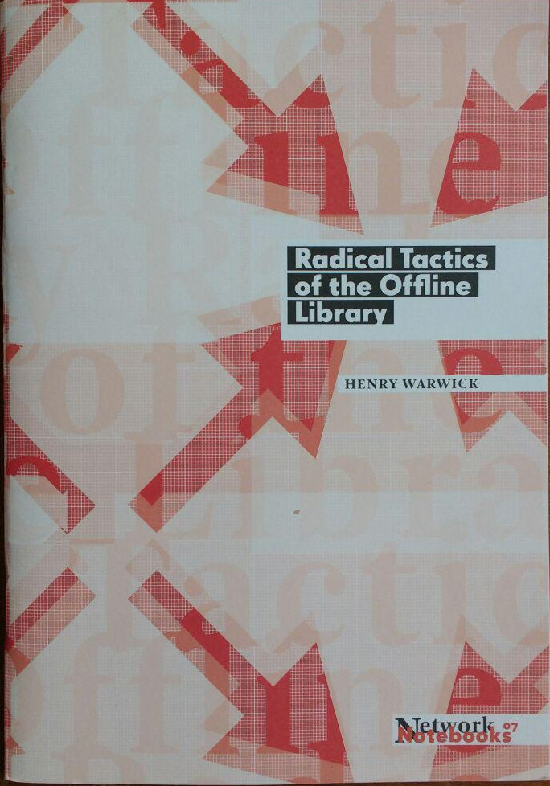

Decidi começar uma trilha aqui no blog compartilhando quais livros estão disponíveis para consulta local na Biblioteca Ubalab. Curiosamente, o livro mais recente por aqui é o Radical Tactics of the Offline Library, de Henry Warwick. O livro faz parte da coleção Network Notebooks, organizada pelo Institute of Network Cultures.
Segue a descrição do livro, no original em inglês:
About the publication: The Personal Portable Library in its most simple form is a hard drive or USB stick containing a large collection of e-books, curated, archived and indexed by an individual user. The flourishing of the offline digital library is a response to the fact that truly private sharing of knowledge in the online realm is increasingly made impossible. While P2P sharing sites and online libraries with downloadable e-books are precarious, people are led to an atavistic and reversalist workaround. The radical tactics of the offline: abandoning the online for more secure offline transfer. Taking inspiration from ancient libraries as copying centers and Sneakernet, Henry Warwick describes the future of the library as digital and offline. Radical Tactics of the Offline Library traces the history of the library and the importance of the Personal Portable Library in sharing knowledge and resisting proprietarian forces. The library in Alexandria contained about 500,000 scrolls; the Library of Congress, the largest library in the history of civilization, contains about 35 million publications. A digital version of it would fit on a 24 terabyte array, which can be purchased for about $2000. Obviously, most people don’t need 35 million books. A small local library of 10,000 books could fit on a 64 GB thumb drive the size of a pack of chewing gum and costing perhaps $40. This is an astounding fact with immense implications. It is trivially simple to start collecting e-books, and then to share the results. And it is much less trivially important. Sharing is caring. Societies where people share, especially ideas, are societies that will naturally flourish. About the author: Henry Warwick is an assistant professor at the RTA School of Media at Ryerson University, in Toronto, where he teaches media and communications theory and audio production. An artist and musician, much of his work can be accessed for free at kether.com. He likes to collect books and music and build libraries.Encontrei também um vídeo sobre o livro.